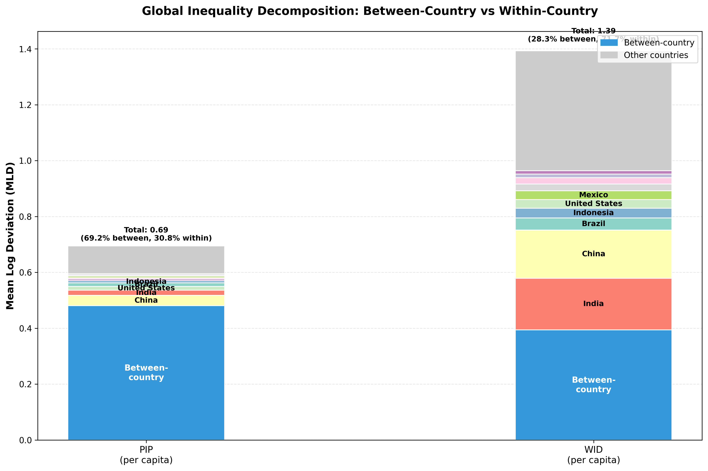

The Data: Two Different Pictures

There are two major sources of global data on incomes: WID and PIP. They tell very different stories about the nature of global income inequality.
Which Countries Drive Within-Country Inequality?

The within-country component (shown in colors) is a simple sum of contributions from individual countries.
China and India dominate in both datasets due to their large populations and moderate-to-high inequality.
Countries with smaller contributions are grouped as "Other countries" (gray) for clarity.